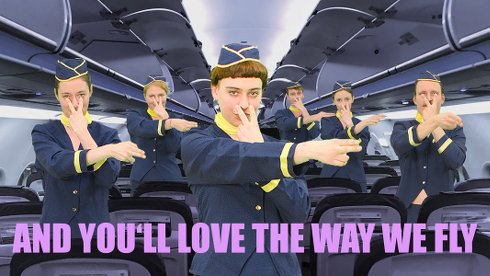

Camille Tricaud & Franziska Unger
Camille Tricaud geb. in Bordeaux. Philosophie-Studium, seit 2014 Dokumentarfilm-Studium an der HFF München. 2018 Kamera-Studium an der ENS Louis Lumière Paris. Ihr mittellanger Film Which Way to the West gewann auf den Kurzfilmtagen Oberhausen den 3sat-Förderpreis.
Franziska Unger Architektur-Diplom an der TU Dresden. Sie arbeitet bei Architketur- und Filmprojekten und macht Videokunst.
www.tanpopo.co
Filme (Camille Tricaud) I Love My #Hairlegs (mit Mila Zhluktenko and Charlotte Funke ) 2018 (13. UX) | Which Way to the West 2019 | Apocalypse Airlines (mit Franziska Unger) 2018
Apocalypse Airlines
2019 | Video, Sound
3 min | Musik-Arrangement von Lovemen
R+S: Tricaud, Unger | K: Lilli Pongratz; Kristina Kilian, Maria
Ostermayer (Ass.)
Licht: Jianni Mürbock | P: Claudia Schnupp, Hanna Bohnenberg | Mit
Niels Behrendt, Annelie Boros, Tobias Göppel, Lena Liegel, André
Lemmer, Pauline Stumpf, Christina Unger
Fake-Werbung für eine fiktive Fluggesellschaft, die uns mit unseren eigenen Widersprüchen konfrontiert. Wir wollen: reisen, die Welt entdecken, uns frei fühlen. Gleichzeitig sind wir uns über die ökologischen Folgen des Flugverkehrs bewusst. Sind wir bereit, Kompromisse zu machen, um verantwortlich zu leben? Ist diese Frage eine rein individuelle oder eine politische Frage? Wie verhalten wir uns gegenüber Werbung?
kinoscreening dienstag 15 okt 20.30 werkstattkino | kurzfilmnacht